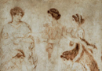
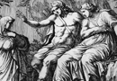
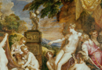
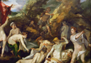
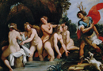
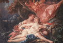

Artemis
Artemis is most often associated in literature with the wilderness and the hunt, and like her brother Apollo she carried a bow and arrow. An ancient hymn, Homeric Hymn 9,written to her begins: Sing, Muse, of Artemis, sister of him who shoots from afar, the virgin archeress reared with Apollo. Her horses’ thirst slakes in Meles’ reed-choked stream, and quickly then drives through Smyrna her car of pure gold to Klaros where vines abound. There Apollo is sitting, god of the silver bow, awaiting his archeress sister, the goddess who shoots from afar. So may you with every goddess take parting joy in my song! But you are my song’s first theme, and from you I begin to sing; from you I began; I will now move on to another hymn. ’ Important here is the connection with her brother which is a central aspect of her presentation in literature. Artemis is also, as the first lines of this poem indicates, a goddess who prizes her virginity. She is often placed in direct contrast with Aphrodite; at the beginning of the Homeric Hymn to Aphrodite (which we will examine in the next chapter) and in Euripides’ play Hippolytus, Artemis can be seen in competition with the goddess of love. She is the then both literally and symbolically the antithesis of erotic love. Again, all of her characteristics are nicely summed up in the second of the Homeric Hymns which is addressed to her, number 27:
‘Of Artemis, goddess with distaff of gold, whose cry resounds, I sing, the virgin revered, the archeress shooter of deer, the sister by birth of Apollo, god of the golden sword. In the chase over shadowy mountains and wind-sept peaks she delights, and takes aim with a bow of pure gold, dispatching arrows of woe. The heads of high mountains tremble, the thick-shaded forest screams out a dire echo of bestial clamour, and shudderings shake both the earth and the sea that is teeming with fish; but she with a heart that is strong now this way turns, now that, destroying the race of beasts. Yet when the archeress tracker of beasts has had pleasure enough from the hunt and has gladdened her mind, she unstrings her flexible bow and goes to her brother’s great home, to PHoibos Apollo’s abode in Delphi’s rich land, to prepare for the Muses’ and Graces’ fair dance. She hangs up there with its arrows her bow that springs back from the pull, and wearing graceful adornments takes the lead in the dance. The goddesses, raising their heavenly voices, sing a hymn of fair-ankled Leto, and tell how she gave her children birth, who are in both counsel and deeds the best of immortals by far. Farewell to you, children of Zeus and Leto with lovely hair. But I will call to mind both you and another song.’
Let’s focus first on the connection with her brother. She carries a bow and arrow, as does her brother. The bow and arrow in the case of Artemis are connected to her role as a huntress (and Apollo is not a hunter), but Artemis is importantly also a deity who brings punishment and death. We have seen in the last chapter how this is a feature of Apollo; he, for example, brings death to the Greeks at the beginning of the Iliad when Agamemnon dishonours the seer Chryses. Artemis, the female counterpart can bring sudden death to women. When the Greek hero Odysseus visits the underworld in the Odyssey book 11. 172–3, he asks his mother’s spirit whether she died after a long illness, or whether it was Artemis who brought sudden death to her.
Of particular note, in this respect of reprisal and revenge, especially for her connection with her brother Apollo is the story of Niobe, told by Ovid in the sixth book of his Metamorphoses. Niobe is the daughter of Tantalus, himself famous for suffering the grotesque punishment of standing eternally in a pool which recedes when he tries to drink, because he transgressed against the gods. Niobe does not learn from her father’s fate, and herself transgresses against the gods by boasting that she is better than Leto because she had 6 boys and 6 girls, while Leto only gave birth to Artemis and Apollo. Once again, we see here the common motif of competition against a god, with disastrous consequences for the mortal. In her wrath, Leto calls upon Diana and Apollo, who punish Niobe by killing both her sons and daughters. After her great weeping, she is changed into a rock on a mountain, down which water flows, just as tears run down her face. Apollo kills her sons, but Niobe continues to boast and Artemis does the same to her daughters (see images 1-2).
{kind=link}
{kind=link}
Artemis is also, however, a deity very much connected with nature and the hunt. Her pursuit of hunting is partially representative of her virginity, and although she is not a goddess with the masculine characteristics of Athena, she is very much involved in the otherwise masculine pursuit of hunting wild beasts. Another myth about Artemis joins her two characteristics of huntress and punisher, the very famous story of Artemis and Actaeon. In this myth Actaeon, a great hunter, inadvertently comes upon Diana while she is bathing on Mt. Cithaeron. Because he barges in upon her and sees her naked, she turns him into a great stag, unable to speak. As he wanders the hills he is followed by his own hounds and fellow hunting companions and is killed. A grotesque end, perhaps, for a mighty hunter who did nothing more than happen upon the goddess without intention (see images 3-5).
{kind=link}
{kind=link}
{kind=link}
Of course, also very much at point here is Artemis’ virginity which is not to be transgressed even by the sight of a man. Indeed, death was the punishment for coming upon the bath of a virgin goddess such as Artemis, regardless of intention; a similar tale is found in the story of Tiresias and Athena. Tiresias is a famous seer, who lived as both a woman and a man, and therefore knew what it was like to be man and woman. In one version of his blinding, Hera takes his sight away in anger at his claim in support of Zeus that women receive 9/10 of the pleasure of sex (told in Ovid, Metamorphoses book 3: see M&L 433–5). But in another version of his blinding, Tiresias comes upon Athena while she is bathing, and as a punishment for having done so he is blinded (told in Callimachus’ fifth hymn to Athena). One can of course note that Athena is a virgin goddess like Artemis, and it is probable that this less common version of Tiresias blinding by Athena was based upon the story of Artemis and Actaeon. Other versions of Actaeon’s downfall make him more culpable: he is said by some earlier sources to have claimed that he was a better hunter than Artemis (remember the common motif of boasting against the gods), or to have wished to marry the virgin Artemis.
In another permutation on the theme of punishment, Artemis seeks revenge in the story of Callisto which is narrated in the second book of Ovid’s Metamorphoses. The poor nymph Callisto, a huntress and attendant of Diana, is raped against her will by Jupiter (or Zeus). He takes the form of Diana in order to get close to the girl, and then rapes her (see images 6-7). Although shamed, Callisto continues to roam with Diana’s band until one day her clothes are stripped from her by her comrades as they go to bath and her pregnancy is revealed. As soon as she sees this, Diana is said by Ovid to shout: “Get away from here! Do not defile this spring”. With that the girl is banished from Diana’s band. There is notably no wrongdoing on Callisto’s part: but the violation of a virginal state is abhorrent to Diana, and she therefore casts Callisto away immediately (this is no moral story). In Ovid’s version it is not Artemis who punishes Callisto for her love affair with Zeus, but Juno (Hera) in jealousy. She turns poor Callisto into a bear, before she is eventually placed in the sky to be a constellation along with her son Arcas. But the connection between punishment and Artemis is nonetheless noteworthy; for in earlier accounts of the myth in Greek literature, it is not Hera but Artemis herself who punishes Callisto, by shooting her with an arrow.
Another theme which is encountered in both the Callisto and the the Actaeon myths is that of ‘misandry’, or the hatred of men. Artemis avoids sexuality, but particularly prominent is her general dislike of men. Many readers of the Callisto myth have understood lesbian themes in the myth. Artemis has very close female companions, who are with her everywhere. And, as I mentioned above, Zeus takes the form of Diana in order to seduce the young maiden. Here is a painting by Francois Boucher which shows Zeus in the form of Diana lying with Callisto (see image 8): the lesbian undercurrent is apparent.
{kind=link}
Her virginity is also displayed in other myths. Orion, who in mythology becomes the constellation, is a famous hunter who tries to rape Artemis: in anger the goddess makes a scorpion come out of the earth to sting Orion to death. But, Artemis has a softer side also to her love of virginity, and she can be seen at times to protect the virginity of her followers. This is well displayed in the myth of Arethusa. Arethusa is a hunting nymph, with whom the river Alpheus falls in love. Naturally, as a virgin nymph she flees and Alpheus pursues her. All seems lost until she prays to Artemis to save her. Artemis comes down and covers her in a cloud which sinks underground and flows as a river to Sicily, where Arethusa becomes a spring (Ovid Metamorphoses book 5).
If Artemis is a goddess very much unconnected with sexuality, she is a goddess who was perhaps paradoxically linked with childbirth. Her concern with childbirth, is perhaps best represented in the myth of her birth. As we saw in the last chapter, Leto gives birth to Apollo on Delos. She gives birth Artemis on Ortygia, a nearby island, or in some accounts on Mt. Cynthus on Delos itself. But in most versions of the birth of the twins, she is born first and helps with the birth of her brother. In classical times Artemis is also a goddess of the moon, whose cycle is itself perhaps connected to the menstrual period of women. She is closely linked with Selene (the moon in the heavens), and her cousin Hecate, who lives in the underworld but could also be connected with fertility. Artemis was worshipped around the Greek world, but one of her most famous reglious sites is Brauron which was 32 kilometres southwest of Athens. The Brauronia was a festival which happened at Brauron every four years and which was attended by the women of Athens. There was a religious ceremony at the festival called the Arkteia (from the Greek word arktos for bear) in which all girls had to ‘play the bear’ before she could marry. The girls would go to the site, where they would dress in special saffron robes, sacrifice to Artemis and in some way ‘play the bear’, although it is unclear exactly what this involved. The festival would have included processions, dancing and footraces for the girls. This was a time during which young girls were being initiated into the cult of a goddess who would play an important role in their lives as mothers. We know that women also made dedications to Artemis at her sanctuary in Brauron after the gave birth, and at other times for the health of their children. The role of the bear in all this, while unclear, also points to Artemis’ connection with the wilderness and the hunt.
To sum up, we have seen that Artemis is a virginal goddess closely connected to the wilderness which she protects, and the hunt. She is also as one might expect, closely associated with her brother Apollo. Together, the share a function as punishers of men and women. Despite, however, their closeness, Artemis is also very different from her brother. Alongside her role as a virgin and huntress, Artemis is also connected closely to women in childbirth. Next, we will look in more detail at Aphrodite/Venus, who is the erotic cause of all coupling leading to childbirth.